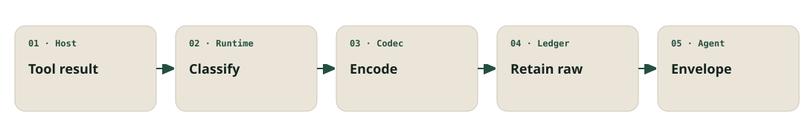

Local context efficiency for coding agents
Smaller tool results.
Exact recovery.
Laconic transforms noisy file, command, and search results before they enter an agent's context. The original stays in a private local ledger, available by exact full or ranged expansion.
Strict-smaller decision
3,682 → 286 characterspages-demo/F1Full or ranged exact expansionObserved
While developing Laconic.
Actual codec counters, separate from economic modelling.
- Fewer visible chars
- 6,900,697
- Boundary reduction
- 28.86%
- Exact expansions
- 117
Frozen local Laconic-repository cohort only. Not representative of other users, repositories, hosts, or workloads. Inspect the evidence.
The system
Reduce first.
Recover exactly.
The host adapter sends a completed tool result to one canonical runtime. The runtime accepts a recovery-bearing envelope only when exact expansion succeeds and the complete visible result is strictly smaller.

Fail-open contract
Compression is optional.
Correctness is not.
Every decision preserves the host's result unless a complete, exactly recoverable, smaller replacement has already been proven.
Strictly smaller
Laconic counts the complete recovery-bearing envelope, not an optimistic intermediate encoding.
Raw retained first
The original remains in the private local ledger until recovery and size checks succeed.
Original on failure
Unsupported tools, errors, malformed shapes, and non-smaller candidates return the original unchanged.
Install entry point
Use the maintained instructions.
The repository README owns installation and host setup. The site does not fork a second guide that can drift.
Claim boundary
What happened.
What is modelled.
Observed character counters and modelled economic implications never share a label, card, or color. Unsupported token, cache, behavior, and general-benefit claims remain out of scope.
Observed
6,900,697
fewer characters visible at the tool-result boundary
- Raw → visible
- 23,914,138 → 17,013,441
- Emitted
- 1,225
modelled_not_measured
$33.89–$76.00
3.87–8.69% of the named modelled denominator
- Modelled denominator
- $874.73 across 85 joined sessions
- Host-reported partial denominator
- $887.24 across 85 reporting sessions
- Fallback-priced share
- 0.000000%
Single-arm model with no counterfactual. Not measured, billed, token, cache, or behavior savings.
Read the frozen evidence ledger and its methodology and limitations.